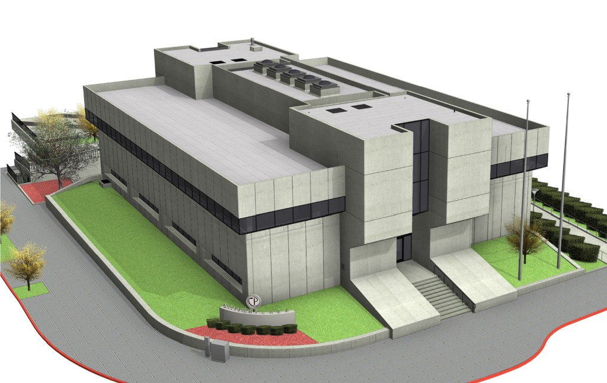
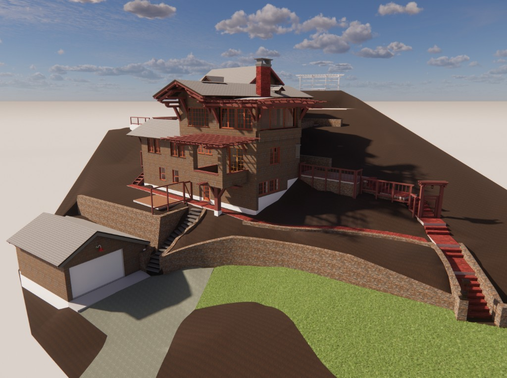

Scanning, photographing and modeling provides remote access, records “doomed” buildings and can guide reproduction in the event of a catastrophic event.
The devastating fire at Notre Dame de Paris highlighted the critical importance of creating detailed digital archives of significant architectural sites to aid in their restoration after a catastrophe. In response, individuals at Ground Truth 3D collaborated with the Government of Singapore and the Singapore University of Technology and Design (SUTD) to digitally document St. Andrew’s Cathedral.

Working alongside a team of design students, we executed a comprehensive capture, scanning, modeling, and photographing the cathedral, its surrounding grounds, and nearby structures. This effort successfully generated a highly detailed digital asset, establishing a historical record that is accessible for online viewing and future preservation.

Working with Gensler, we scanned an entire city block in San Jose, CA, focusing on a full, detailed model of the Bank of California building, also known as “The Sphinx,” a Cesar Pelli building and early example of Pelli’s brutalist architecture and considered an important heritage structure. The building could not be saved but a thorough digital record now exists for future architects and historians.

Architects Julia Morgan and Bernard Maybeck are renowned for their work in the California Arts and Crafts and Beaux-Arts styles, having designed numerous exquisite residences across the San Francisco Bay area. These homes frequently showcase intricate detailing in old-growth redwood, a rare and beautiful material that demands diligent upkeep. Unfortunately, many of these architectural treasures have been lost to demolition, fire, or careless renovations. To preserve a record regardless of future events, we completed accurate geometric and photographic documentation of two such buildings.